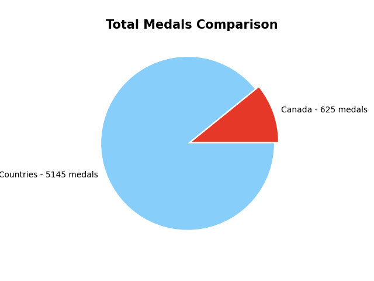
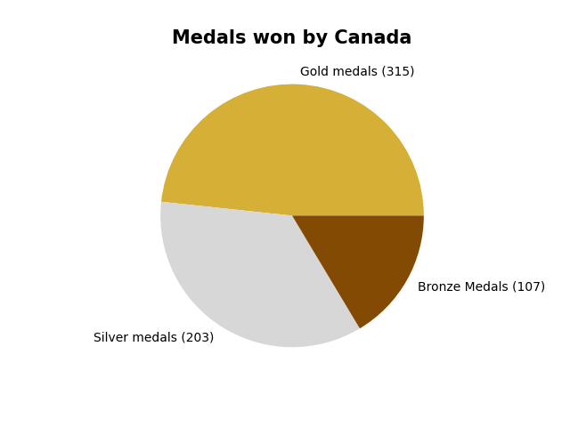
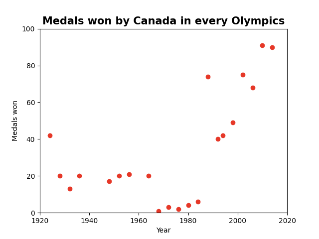
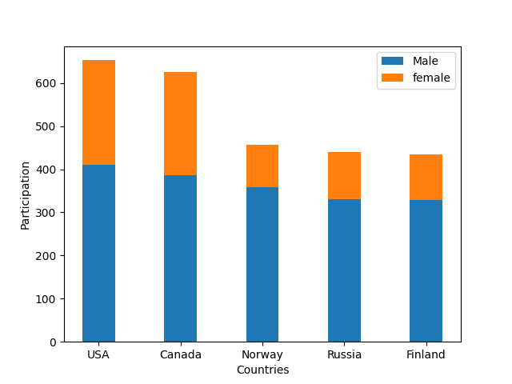
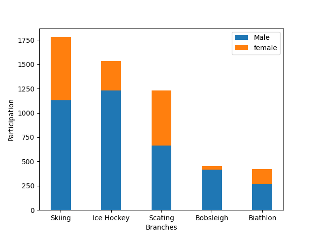

Data about Winter Olympics
Data Point 1
Canada's Total Medal Comparison with Other Countries
Canada may look small on the pie chart, but considering it has won 12% of the medals total, this is a huge accomplishent.
Data Point 2
Which type of Medals Canada Won
The most medals won are gold. Lead by silver and lastly bronze.
Data Point 3
Number of Medals Won By Canada in every Winter Olympics
Canada has its ups and downs through the years. With the beginning of the 1990's Canada's success increased significantly.
Data Point 4
Female Athletes' participation Through the Years
Traditionally, women were not allowed to participate in the Games, which were exclusively for men. The success of the The International Olympic Committee Women in Sport Policy is noticeable in terms of women’s participation in the Games. The number of women competing at the Games has increased significantly over the last 30 years
Data Point 5
Gender Distribution of the Top 5 Medal Winning Countries
Even though women participation increases in each olympics, there is still a cap between men and women.
Data Point 6
Gender Distribution of the Top 5 Popular Branches
Bobsleigh and ice hockey is dominated by men, while skating has a more balanced distribution.
